Depth Scatter Rendering in TouchDesigner
A technique for creating point clouds from simple 3D scenes
Here I'm going to show a rendering technique in TouchDesigner that I've used frequently, both for live VJ performing and to make music videos like this one :
I've been drawn to it because even with a relatively simple set of input 3D geometry, you get an illusion of fine detail, it's quite easy to art direct, and super fast, which is great when you already have some complex stuff going on with the initial source geometry.
Essentially it's a GPU particle system driven by the depth output of a much simpler render within TouchDesigner - so let's see how it's done!
Step 1 - create a basic 3D scene.
This will be the scene that drives the particle system, so any large dynamic changes to the world should happen here.
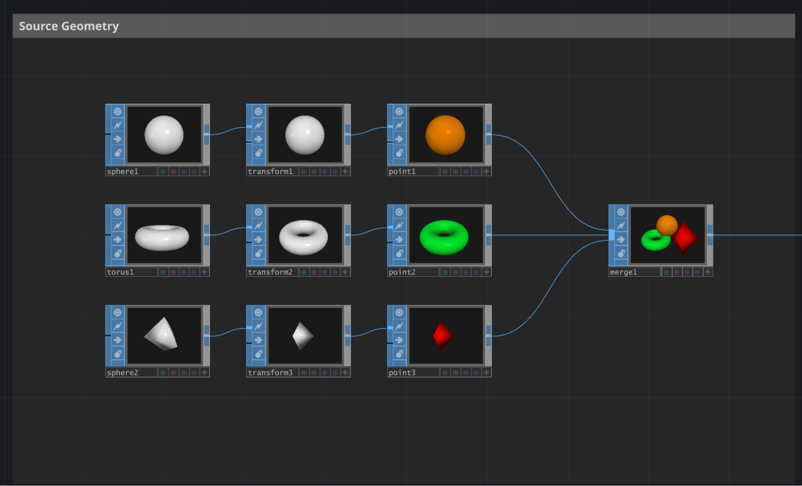
Here I'm creating three primitives, arranging them using Transform SOPs, adding point colours to each via the Point SOP, and merging them all together.
We're going to be manipulating our particles a lot based on this scene's depth, so things like tunnels, caves or objects spread between the foreground and background should work well to demonstrate the technique.
Step 2 - setup basic scene renderer
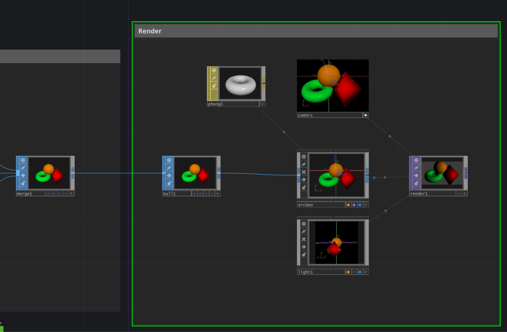
Now we take this merged geometry and pipe it into a Geometry COMP, here called srcGeo.
(Hint - huge time-saving tip that I saw somewhere, if you're dragging an output from a SOP, keep the mouse button down, and then create a Geometry from the Tab menu, it'll wire up the SOP geometry inside the COMP automatically, neat!)
Then we set up Camera & Light COMPs, create a simple Phong MAT, and finally a Render TOP to output an image of our little scene.
What's good to focus on here is good contrast in the lighting and range of depth in the camera - we don't need to worry too much about texturing or aspects of the MAT at this point, but we can tweak it later once the particle system is setup.
Step 3 - extract depth from render
Next we're going to add a Depth TOP and point it at our Render TOP (by adding the path to the Render TOP in the OP field).
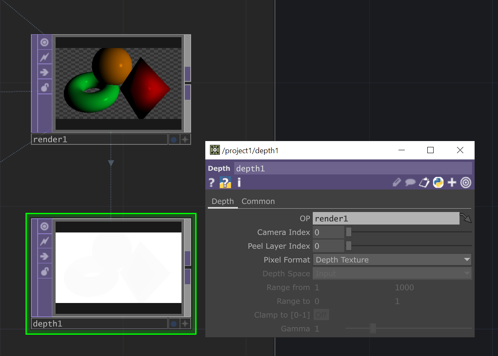
If you, like me, haven't previously looked at the Depth TOP, it's a useful procedure to extract the depth map from your renders, which you can later use for post-effects like depth of field (using a Lookup & a Luma Blur TOP), or in this case, to drive a secondary particle system.
Now you may not be able to see much in the Depth TOP itself, in the image above you can faintly see the outlines of our objects, but there's a nice feature in TOPs that let us visualise the depth map more easily.
Click on the Depth TOP, activate the viewer (star in the bottom-right, or press 'a'), right-click on the background and select 'Normalised Split'. You should then see something like this :
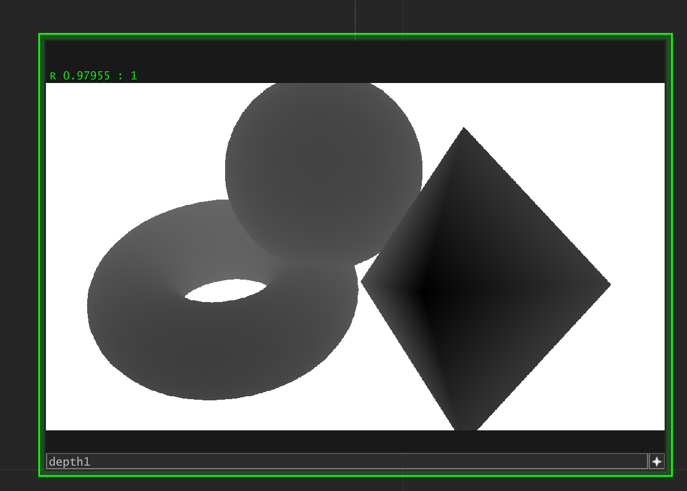
You can also right-click and choose 'Display Pixel Values', which will overlay the current pixel value underneath the mouse:
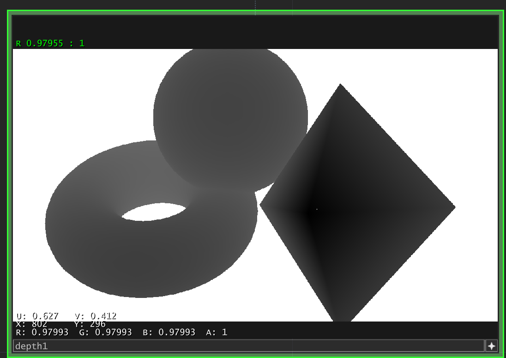
If you mouse around a bit, you'll notice that the majority of our values are crunched within the 0.99..1.0 range - this is because all of these values are relative to the Near and Far parameters of the Camera COMP - which is 0.1 -> 1000 by default.
If our objects are only 1 unit deep from the camera, most of that 32-bit float precision is spent on the other 999 units, resulting in the values we see here. Usually that's fine, but it's something you can come back to tweak later if you see 'stepping' or other artifacts in the particle sim.
Another point to raise here is the Texture Format of the Depth TOP. If you middle-mouse (or Alt-right click) on the Depth TOP, you'll see this :
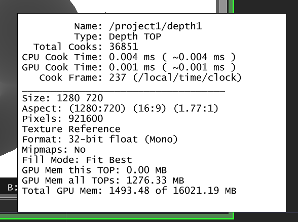
Notice the section marked 'Format' - and compare it to what comes up on your normal TOPs (which will probably be 8-bit fixed (RGBA)). This means that on the GPU, the texture backing up this Depth TOP is using a 1-channel 32-bit float, whereas normal tops use a 4-channel (for R,G,B and Alpha), 8-bit fixed representation.
This format is used for extra accuracy in the depth map (or depth buffer), so it's less likely (but not guaranteed) to see z-fighting when two objects are overlapping and similar in distance from the camera.
This 32-bit float texture format also allows negative numbers to be stored in the texture, which will be very important later on.
Step 4 - Creating the GPU Particle System
So now we have a simple 3D scene, and a texture that represents the depth of the scene relative to the viewer's position.
What we want to do next is very similar to ray tracing, where we fire an imaginary ray from the camera's position into the scene, wait for it to hit something, then spawn a particle at that position.
The steps are :
- Generate a random position in screen-space (which we'll call UV, to make it distinct from XY in world space)
- Sample the depth map at this UV position, get the depth value (which will be between 0 and 1)
- Grab the camera's inverse projection matrix.
- There's a short explainer on what that is here - in very simple terms, it's a series of values that describe the properties of the camera, i.e. its field of view, its near & far planes etc.
- THE MAGIC BIT : Use this matrix and a bit of maths to convert the values above into a world space position in 3D.
- Spawn a particle in a new 3D scene at this location
- Do this many, many times
- Render the new scene.
So in diagrams, first we sample a point in screen space, get the depth value:
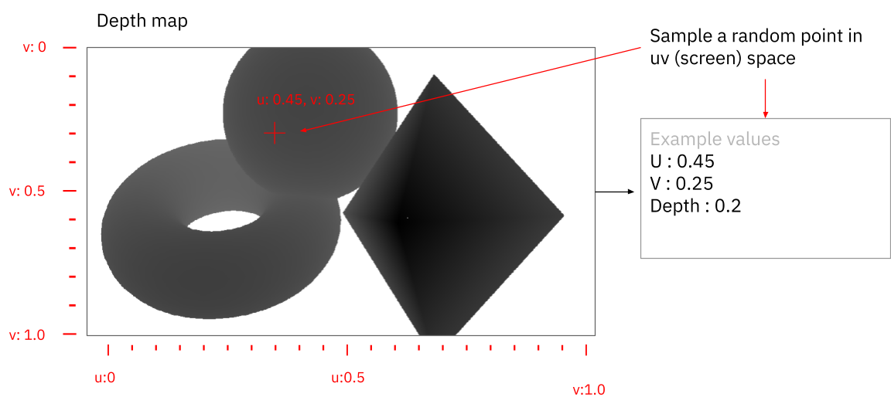
This corresponds to a point on the sphere, seen here from a different angle :
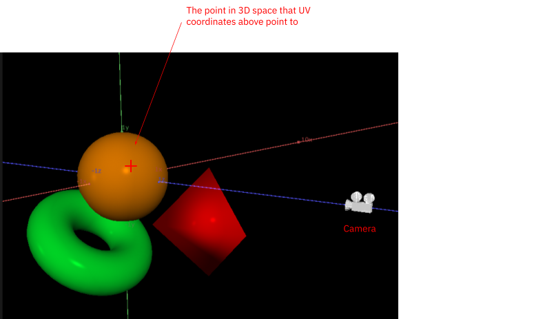
Now comes the magic / hard bit, depending on your comfort with matrix math (which for the record, mine is not great). We multiply this screen-space position and depth by the camera's inverse projection matrix, which gives us a position in 3D space, that we can use to drive a particle system.
The next step is to do this for many points per frame, each sampling a different part of the depth map, so our particles build up a representation of the original 3D scene, like this :
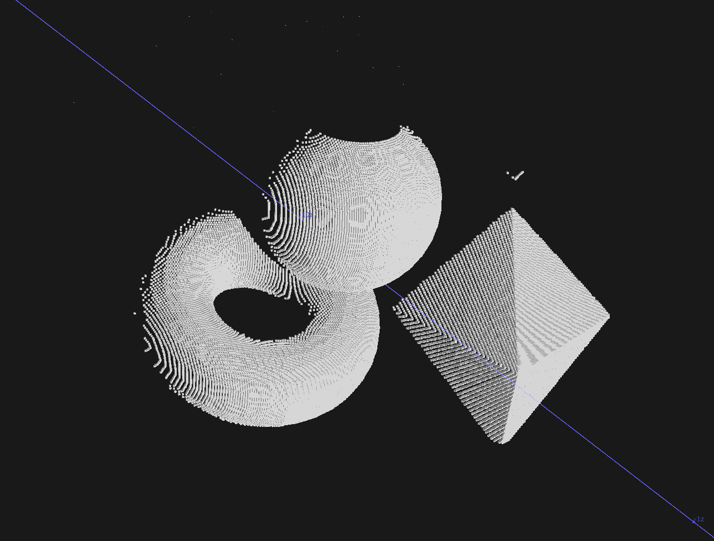
So how do we implement this in TouchDesigner?
First, we create a Noise TOP, (set to Random (GPU), the Pixel Format set to 8-bit fixed RGBA, Output to Noise, and the input coming from the Depth TOP to match the resolution), and the Depth TOP itself.
This Noise is very important, it's going to provide the random per-frame points for us to sample the depth texture from. It gives us a big list of values in the range (0..1, 0..1, 0..1) for the red, green and blue channels, which we then use in the compute shader as UV coordinates on the depth map.
Then we're going to create a Compute Shader to do the conversion of depth map + camera matrix into world-space positions, but on the GPU. We can do this with a GLSL Multi TOP :
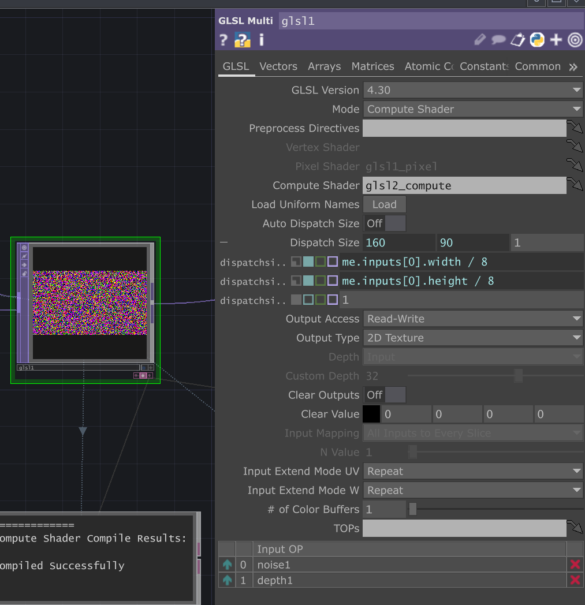
And plug the Noise TOP and Depth TOP into the multi-input connector, in that order (important!)
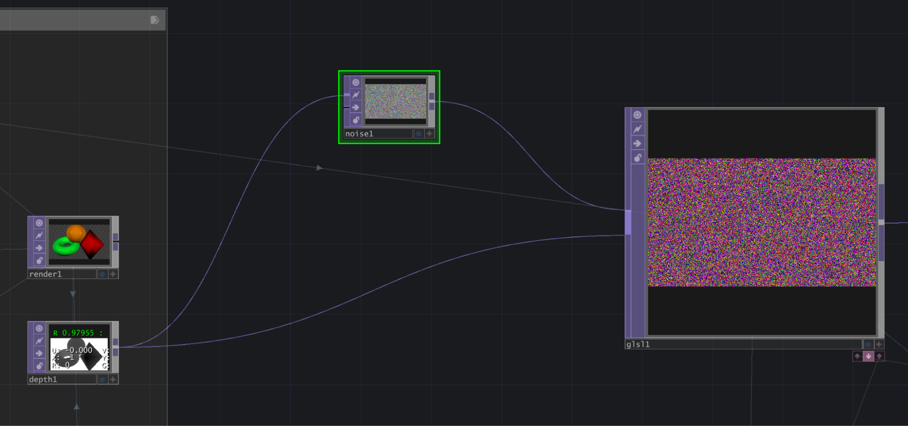
When you put down a GLSL Multi TOP, by default it's set to use a vertex/pixel shader, which is what you'd traditionally use for a full-screen post-processing effect.
We're going to set the Mode to 'Compute Shader', because they're more flexible, for example letting us write to more than one output at a time (which okay, you can do in fragment shaders, but it's tricky).
Then we set the property called 'Dispatch Size', in which I've added an expression for the input width & height, divided by 8. This is another area where compute shaders differ from vertex/fragment shaders, in that you can directly specify the 'batch size' in which they run (as opposed to being limited to iterating over vertices and fragments). Optimising this is something that specialised graphics programmers will be able to tell you more about than me (see here ), but my general understanding is that:
- If you're running a compute shader over a texture (or other buffer
that contains data), your Dispatch Size needs to
= the dimensions of input buffer / thread size (defined in the shader code itself)
Here we have a Dispatch Size of 160 x 90, and in the compute shader (which we'll see in a second), a layout of 8 x 8.
These values have worked fine for me, but if you want to fiddle, you can increase the size in the shader and change the corresponding number in the Dispatch Size expression. If these mismatch, you'll either be wasting dispatch cycles (because the shader will be running over parts of the texture that are out of bounds, and be discarded), or miss processing parts of the input image (because there won't be enough thread groups dispatched to cover the whole thing).
Next we need to pass our camera projection matrix to the compute shader. In the Matrices tab of the GLSL Multi TOP, we create a Matrix uniform called invCamProjection :
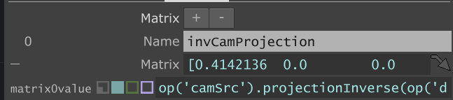
The expression for the value here is :
op('camSrc').projectionInverse(op('depth1').width,op('depth1').height)
The projectionInverse function here takes in an aspect ratio, which we give it by specifying the width and height of the Depth TOP. This is because the camera doesn't specify an aspect ratio itself (that's determined by the Render TOP that uses it), so in order to create a matrix we need to specify one.
Now we're ready to create our Compute Shader. Click the first pink arrow underneath the GLSL Multi TOP to open up the editor, and put in the following :
uniform mat4 invCamProjection;
layout (local_size_x = 8, local_size_y = 8) in;
void main()
{
ivec2 uv = ivec2(gl_GlobalInvocationID.xy);
vec2 depthUV = texelFetch(sTD2DInputs[0], uv, 0).xy;
float depth = texture(sTD2DInputs[1], depthUV.xy).r;
vec4 screenspacePos = vec4(-1.0f + (depthUV.x * 2.0f), -1.0f + (depthUV.y * 2.0f), depth, 1);
vec4 hpositionWS = invCamProjection * screenspacePos;
hpositionWS.xyz = hpositionWS.xyz / hpositionWS.w;
vec3 posWorld = hpositionWS.xyz;
imageStore(mTDComputeOutputs[0], ivec2(uv), vec4(posWorld, 1.0f));
}
It should look like this in the DAT editor :
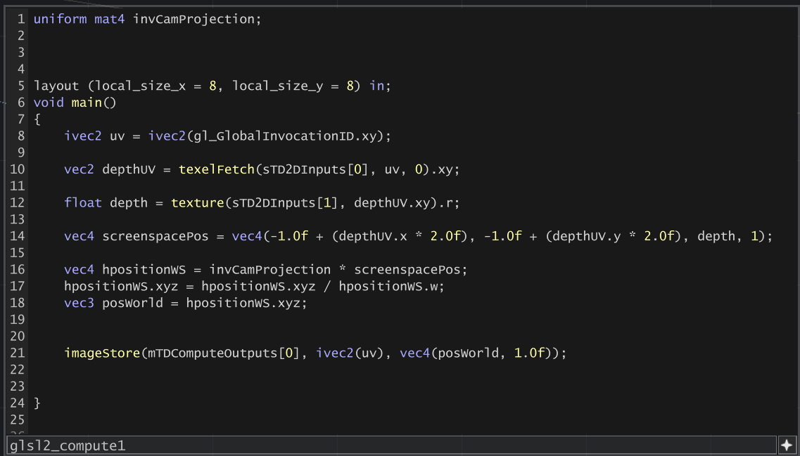
Let's step through this and see what's happening.
- First uniform mat4 invCamProjection is importing our matrix from the uniform we defined a second ago, grabbing it from the Camera COMP.
- Then layout (local_size_x = 8, local_size_y = 8) in; specifies the thread group size, see above discussion on Dispatch Size.
- We get a texel-based UV ivec2 that we're going to call UV (even though it's not normalised) ivec2 uv = ivec2(gl_GlobalInvocationID.xy); `
- We sample the first input (which is our Noise TOP) to get a random XY coordinate in (0..1, 0..1). Here we use texelFetch because our UV coordinate is in the space (0..width, 0..height).
- Then we sample the input depth map using our depthUV value - using texture because depthUV is normalised (0..1). From this we get a float depth, which is normalised (0..1), where 0 is the near plane and 1 is the far plane of the camera.
- The camera matrix works in a 'screen space' coordinate system that extends from (-1,1, -1,1), so we convert our depthUV coordinates into this screenspacePos space on line 14, and (important!) add depth as the z component, and a 1 as the w component because we're working with 4x4 matrices, and our next step needs a vec4.
- Now comes the matrix math - we multiply invCamProjection by screenspacePos
- …and this should give us our world-space position, right? NO. Because matrix math, we need to divide the xyz component by the w component of the resulting vector, which happens on the next line. Maybe someone can explain to be why one day.
- We then imageStore this value into our output texture.
If this all works, and the GLSL Multi TOP doesn't report any errors, you should see something like this in the viewer :
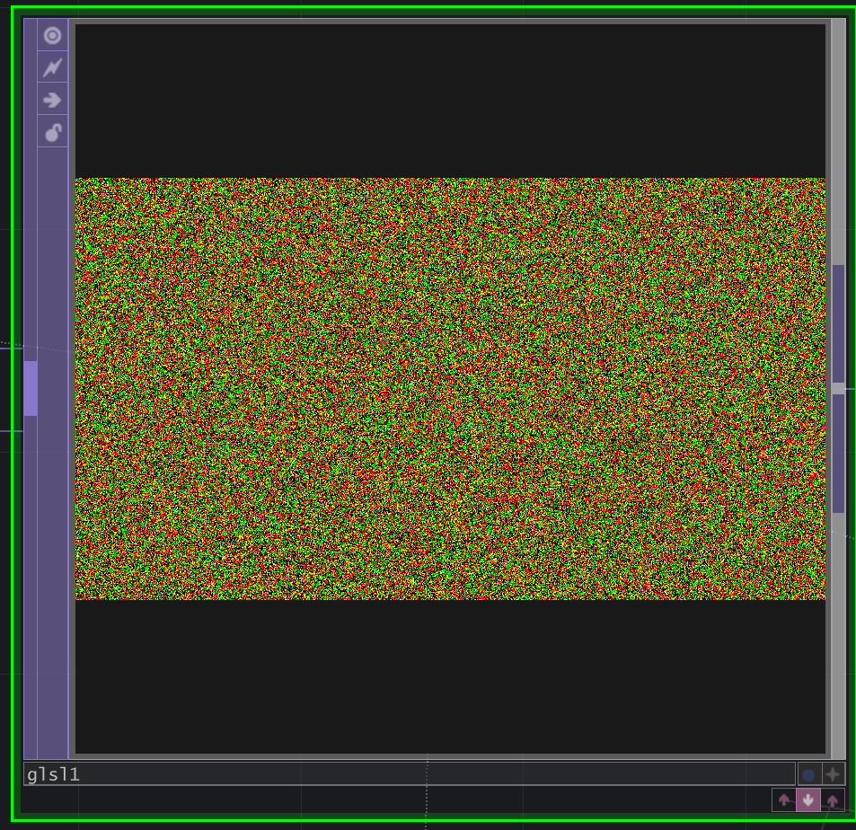
And if you enable Normalised Split in the viewer as above, you can see the bounds of the positions we've extracted from the depth map & camera matrix :
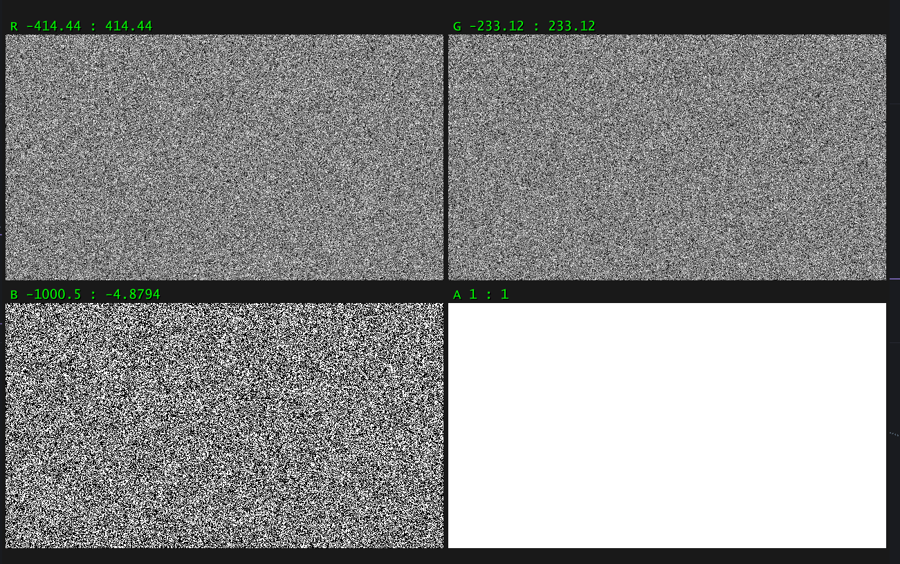
Each point in this output texture will represent an output particle, so if our input image is 1280x720, we'll have 921,600 particles - which is quite a lot, but no big deal for a modern GPU to handle. You can specify a larger or smaller amount by manually changing the resolution of your input Noise TOP.
Our B channel represents Z, and we see the minimum value as -1000, which is the 'far' plane of the camera. And we also notice some large values for the extents of R & G, so what's happening here?
Well a lot of our particles will hit the 'background' of the Depth map, meaning there weren't any 3D objects there, so they return a depth value of 1, and are scattered over an imaginary surface at -1000 away from the camera. We can either discard these particles (see later when we talk about particle lifetimes) or specify a closer Far plane in the camera we use for rendering our particles, so they get clipped off.
Now let's use these positions to render some particles!
Step 5 - Rendering the particles
One of TouchDesigner's best party tricks is Instancing, where you can input a simple bit of geometry, but duplicate it many, many times on the GPU very performantly, driving it with a mixture of TOPs, CHOPs or DATs - whatever you want, just as long as the dimensions match up. This lets you do lots of creative things with point clouds, if you scroll Instagram for #touchdesigner you'll see a lot of this technique being used in live VJ sets and installations.
So for our particles, we're going to create a simple Box SOP, and wire this into a Geometry COMP, so we have something to render :
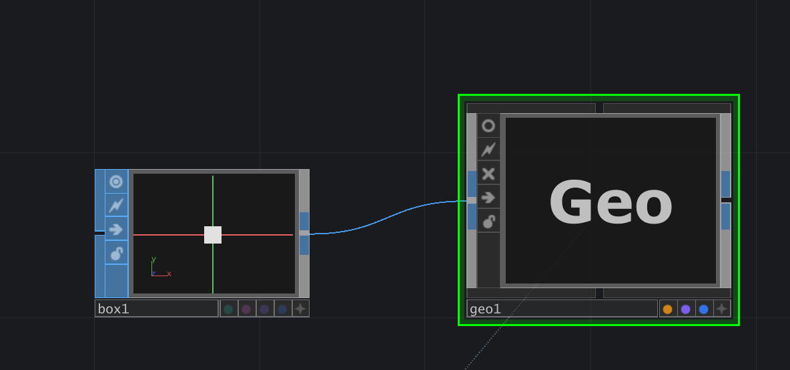
Then we go to the Instancing tab of the geo1 COMP, and turn on Instancing, and drag the GLSL Multi TOP into the Translate OP field. Then we assign r, g and b to the Translate X, Y and Z parameters respectively (there's a drop-down under the arrow on the right).
The next that that happens is that TouchDesigner might get super slow, this is because our Box TOP is way too large and causing lots of overdraw in the Geo viewer.
So we go back to our Box SOP, and turn down the Uniform Scale to something like 0.01, until we see something like this in the Geo viewer - you might need to hunt around a bit using the in-built camera to find your points.
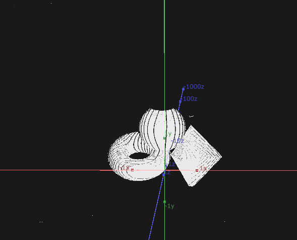
You might also see this collection of points splatted against a 'back wall', with a shadow of missing points in the outline of your objects - that's the points that missed any objects, which we can deal with later.
Next we can create a new Render TOP, but specify only geo1 in the Geometry property, so it only renders the particles. Specify the original camera in the corresponding Render TOP property, and it should look something like this :
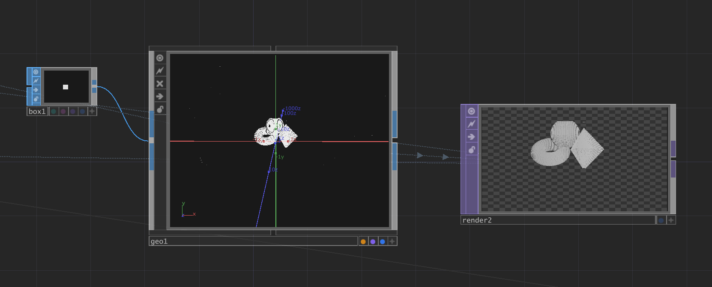
And we've made our first depth-scattered particle system!
Things to check if it doesn't :
- Uniform Scale of the Box SOP, if you make this 1, you should see some particles around the place
- The Normalised Split view of the GLSL Multi TOP, it should look like noise (i.e. different values scattered across the place), and have a max/min around half of your Camera's Far plane.
But this isn't particularly exciting by itself, we're going to take this a bit further.
Step 6 - Particle lifetime, colour & motion
Currently we're creating new 'particles' every frame, and then overwriting these all on the next frame.
We're also sampling the same particle position on the depth map, because our input Noise TOP is not changing.
Let's make our Noise move, by plugging the current frame number into the random Seed parameter:

What we want to do is:
- Maintain a list of particle 'lifetimes', which reduce over time
- When a particle's lifetime reaches 0, we sample a new point on the depth map, and reset its lifespan.
We do this by having our Compute Shader write to a second texture, to store the lifetime of that particle, which gets read back in on the next frame.
Something nice about Compute Shaders is that we can both read and write to our output texture buffers, and provided we're always reading/writing to the same part of the texture for each particle that we process, we won't get into trouble. Of course, if we started reading & writing to another part of the texture (i.e. another particle), we don't know whether this frame's calculation has completed on that part, so we could get unexpected results.
So let's create a second output for our Compute Shader to write to, in the GLSL Multi TOP :
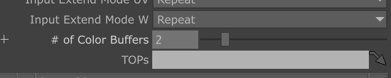
What you'll notice is there's no increase in output connectors on the GLSL Multi TOP, we need to use a Render Select TOP to extract this buffer :
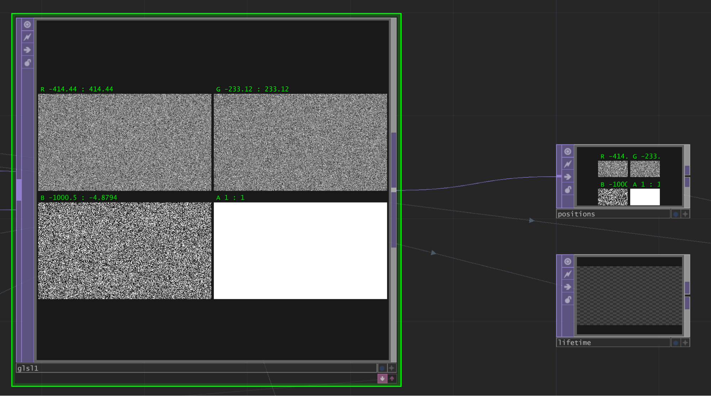
You can also see that I've attached a Null TOP to the output of the GLSL and called it positions.
Assign the GLSL top to the TOP parameter of the Render Select TOP, and set the index to 1. Initially, it'll be blank because we're not writing to it yet.
Let's modify our Compute Shader to see how easy it is to write to multiple outputs:
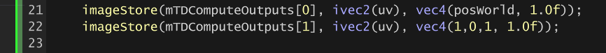
Here we've added a line 22, which writes (1,0,1,1) to the output at index 1, which gives us a nice pink colour in the Render Select TOP :
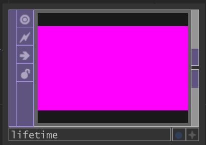
Now we need to modify our shader to do the following
- read the current lifetime
value of our particle from the lifetime buffer
- if it's greater than 0, decrease it by some small amount, write it back to the buffer
- if it's less than or equal to 0, re-sample the depth buffer, calculate a new world-space position for the particle, and reset the lifetime.
So our compute shader will change to this:
uniform mat4 invCamProjection;
layout (local_size_x = 8, local_size_y = 8) in;
void main()
{
ivec2 uv = ivec2(gl_GlobalInvocationID.xy);
vec4 lifetime = imageLoad(mTDComputeOutputs[1], uv);
if (lifetime.x > 0){
lifetime.x -= 0.1f;
} else {
lifetime.x = 1.0f;
vec2 depthUV = texelFetch(sTD2DInputs[0], uv, 0).xy;
float depth = texture(sTD2DInputs[1], depthUV.xy).r;
vec4 screenspacePos = vec4(-1.0f + (depthUV.x * 2.0f), -1.0f + (depthUV.y * 2.0f), depth, 1);
vec4 hpositionWS = invCamProjection * screenspacePos;
hpositionWS.xyz = hpositionWS.xyz / hpositionWS.w;
vec3 posWorld = hpositionWS.xyz;
imageStore(mTDComputeOutputs[0], ivec2(uv), vec4(posWorld, 1.0f));
}
imageStore(mTDComputeOutputs[1], ivec2(uv), lifetime);
}
Now if we look at our outputs, we should see the lifetime TOP flashing from pink to blue, and the positions TOP changing pattern whenever it changes to pink.
This is nice, but we don't want our particles all re-birthing at the same time, so we need to add some variation.
There's other ways of doing this, for sure, such as seeding the lifetime texture with a noise pattern on reset.
We can do this by using the (unused, so far) part of the input noise, and using it to affect both the age rate and the life expectancy. We need to shuffle our compute shader around a bit, so we sample the whole noise component before the if statement :
uniform mat4 invCamProjection;
layout (local_size_x = 8, local_size_y = 8) in;
void main()
{
ivec2 uv = ivec2(gl_GlobalInvocationID.xy);
vec4 noise = texelFetch(sTD2DInputs[0], uv, 0); // sample noise input
vec4 lifetime = imageLoad(mTDComputeOutputs[1], uv);
if (lifetime.x > 0){
lifetime.x -= 0.1f * noise.b;
} else {
lifetime.x = 1.0f * noise.b;
vec2 depthUV = noise.xy;
float depth = texture(sTD2DInputs[1], depthUV.xy).r;
vec4 screenspacePos = vec4(-1.0f + (depthUV.x * 2.0f), -1.0f + (depthUV.y * 2.0f), depth, 1);
vec4 hpositionWS = invCamProjection * screenspacePos;
hpositionWS.xyz = hpositionWS.xyz / hpositionWS.w;
vec3 posWorld = hpositionWS.xyz;
imageStore(mTDComputeOutputs[0], ivec2(uv), vec4(posWorld, 1.0f));
}
imageStore(mTDComputeOutputs[1], ivec2(uv), lifetime);
}
We should now see the positions and lifetimes changing a bit more evenly. In our final render, we should see particles glittering across the surface a bit. But the effect is pretty subtle, because our underlying depth map isn't changing.
Let's add some motion to our source image so we can see the effect of particle lifetime on this end image.
Let's go back to our srcGeo (the one holding the sphere, triangle and torus), and make it spin, but putting an expression inside the Rotate Y parameter :
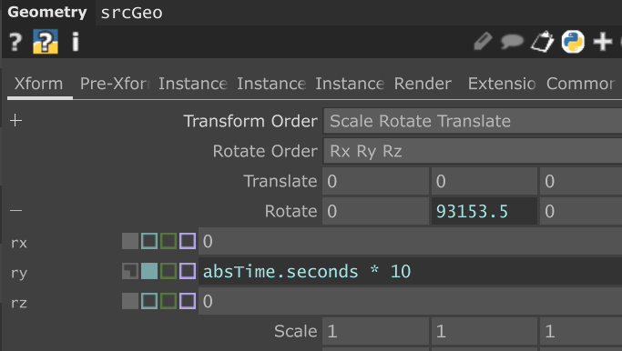
Now we should be able to see a bit of a difference in the final render. It's still a little uninspiring though, so let's push on with some more particle behaviours & effects.
For example, let's sample the colour of the original render - which (depending on your original material setup) will include shadows.
Connect the original Render TOP into the GLSL Multi TOP, and check that it's in position 2 in the list :
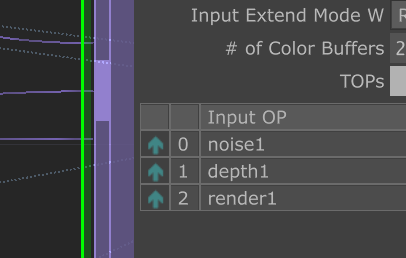
Now we could create a new output buffer to hold the colour information for the particles, but as we're only using one channel of our lifetime buffer, we could use the other three to store colour.
So let's do that - first by moving the channel we use to store lifetime to the w channel (or alpha) channel of the output, and then by sampling the render buffer input, and storing that in the rgb channels.
New compute shader:
uniform mat4 invCamProjection;
layout (local_size_x = 8, local_size_y = 8) in;
void main()
{
ivec2 uv = ivec2(gl_GlobalInvocationID.xy);
vec4 noise = texelFetch(sTD2DInputs[0], uv, 0); // sample noise input
vec4 lifetime = imageLoad(mTDComputeOutputs[1], uv);
if (lifetime.w > 0){
lifetime.w -= 0.1f * noise.b;
} else {
lifetime.w = 1.0f * noise.b;
vec2 depthUV = noise.xy;
float depth = texture(sTD2DInputs[1], depthUV.xy).r;
vec3 colour = texture(sTD2DInputs[2], depthUV.xy).rgb;
lifetime.rgb = colour;
vec4 screenspacePos = vec4(-1.0f + (depthUV.x * 2.0f), -1.0f + (depthUV.y * 2.0f), depth, 1);
vec4 hpositionWS = invCamProjection * screenspacePos;
hpositionWS.xyz = hpositionWS.xyz / hpositionWS.w;
vec3 posWorld = hpositionWS.xyz;
imageStore(mTDComputeOutputs[0], ivec2(uv), vec4(posWorld, 1.0f));
}
imageStore(mTDComputeOutputs[1], ivec2(uv), lifetime);
}
In order to display these colours on our particles, we need to go to the Instance 2 tab on our particle geo1, and drag into the lifetime TOP, and set the R, G, B parameters accordingly:
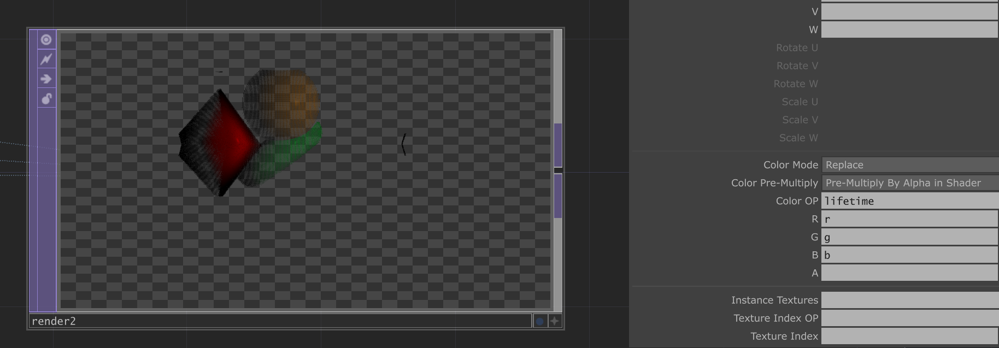
What we should then see is our particles in the final Render TOP obtain the same colour as in the original render. It might help to set the Camera COMP to render with a black background to see better.
What we can also do at this stage is use the actual lifetime channel (a, or w) to control the scale of the particles, so they fade away instead of popping in and out.
We can tweak the amount we decrease the lifetime by each frame in order to see this more clearly - and also notice the 'time smearing' effect we get with this change, which is a key part of this whole system. I like to adjust this depending on the amount of movement in the original scene, to give something that's either deliberately abstract or really clear, depending on the moment.
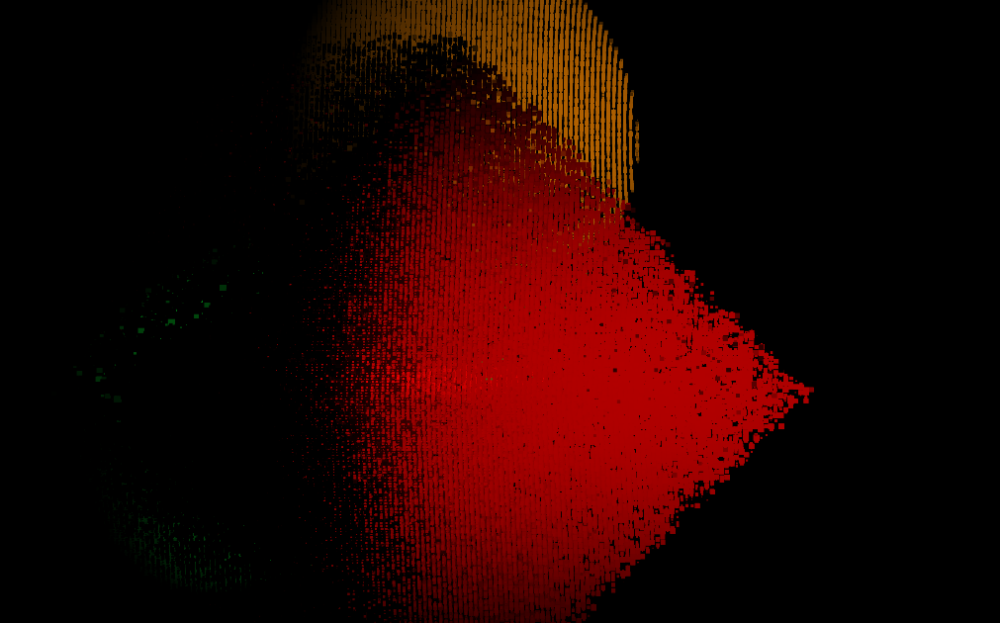
One last thing, is adding some movement into the particles themselves, so for example some gravity. For this we need to read the current position, modify it, and write it back when the lifetime > 0 in the compute shader, which now looks like this (we've had to shuffle around the read/write commands to the position buffer) a bit :
uniform mat4 invCamProjection;
layout (local_size_x = 8, local_size_y = 8) in;
void main()
{
ivec2 uv = ivec2(gl_GlobalInvocationID.xy);
vec4 noise = texelFetch(sTD2DInputs[0], uv, 0); // sample noise input
vec4 lifetime = imageLoad(mTDComputeOutputs[1], uv);
vec4 position = imageLoad(mTDComputeOutputs[0], uv);
if (lifetime.w > 0){
lifetime.w -= 0.01f * noise.b;
position.y -= 0.01f * sin(noise.b);
} else {
lifetime.w = 1.0f * noise.b;
vec2 depthUV = noise.xy;
float depth = texture(sTD2DInputs[1], depthUV.xy).r;
vec3 colour = texture(sTD2DInputs[2], depthUV.xy).rgb;
lifetime.rgb = colour;
vec4 screenspacePos = vec4(-1.0f + (depthUV.x * 2.0f), -1.0f + (depthUV.y * 2.0f), depth, 1);
vec4 hpositionWS = invCamProjection * screenspacePos;
hpositionWS.xyz = hpositionWS.xyz / hpositionWS.w;
position = vec4(hpositionWS.xyz, 1);
}
imageStore(mTDComputeOutputs[0], ivec2(uv), position);
imageStore(mTDComputeOutputs[1], ivec2(uv), lifetime);
}
And we should have something like this :
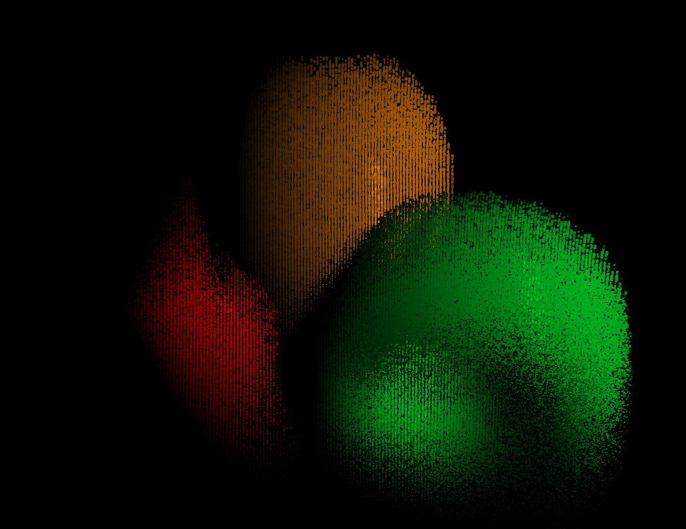
Where our particles are falling a bit like sand.
Step X - Next Steps?
We're now into the region of programming general GPU particle simulations in a compute shader, which is a well-established field of work in itself, with lots of resources. - a quick Google for 'TouchDesigner GPU Particles' will give you a whole bunch of things to try out, so our tutorial is going to pause here for now.
Things to look into:
- Per-instance textures (as used in the Harmonic Dream Sequence video above)
- Using a different camera to render the final particles than the one that creates the depth map
- Adding position noise over lifetime
- Varying the size of particles, e.g. based on colour, or noise lookup
- Having a small random subset of particles 'glitter' or shine
- Having some percentage of particles randomly scattered in space, as a dust effect, which helps give a sense of parallax when moving the camera a lot.
- Using inputs like the Kinect Camera (which will output a point cloud by itself), or grayscale patterns with a moving camera to create interesting 'swept' shapes through 3D space.
Many of these effects I've implemented in my own systems, inspired a great deal by Keijiro's work in the Unity Visual Effect Graph (particularly the glitter effect).
There's also going to be alternative (and maybe even better!) methods to achieve all of the above, but this approach has taught me a whole lot about compute shaders, and let me control the particle behaviour in a very precise way, and all in realtime!
The next thing I'm going to look at (and maybe write an article on) is importing these position buffers into a program like Houdini for rendering the particles in a more high-end manner. Why? Because simulation in Houdini can be a bit slow, and unless you're using OpenCL nodes, not necessarily GPU-accelerated. I've already done some tests with importing the position buffers into Houdini as an image sequence, so watch this space.